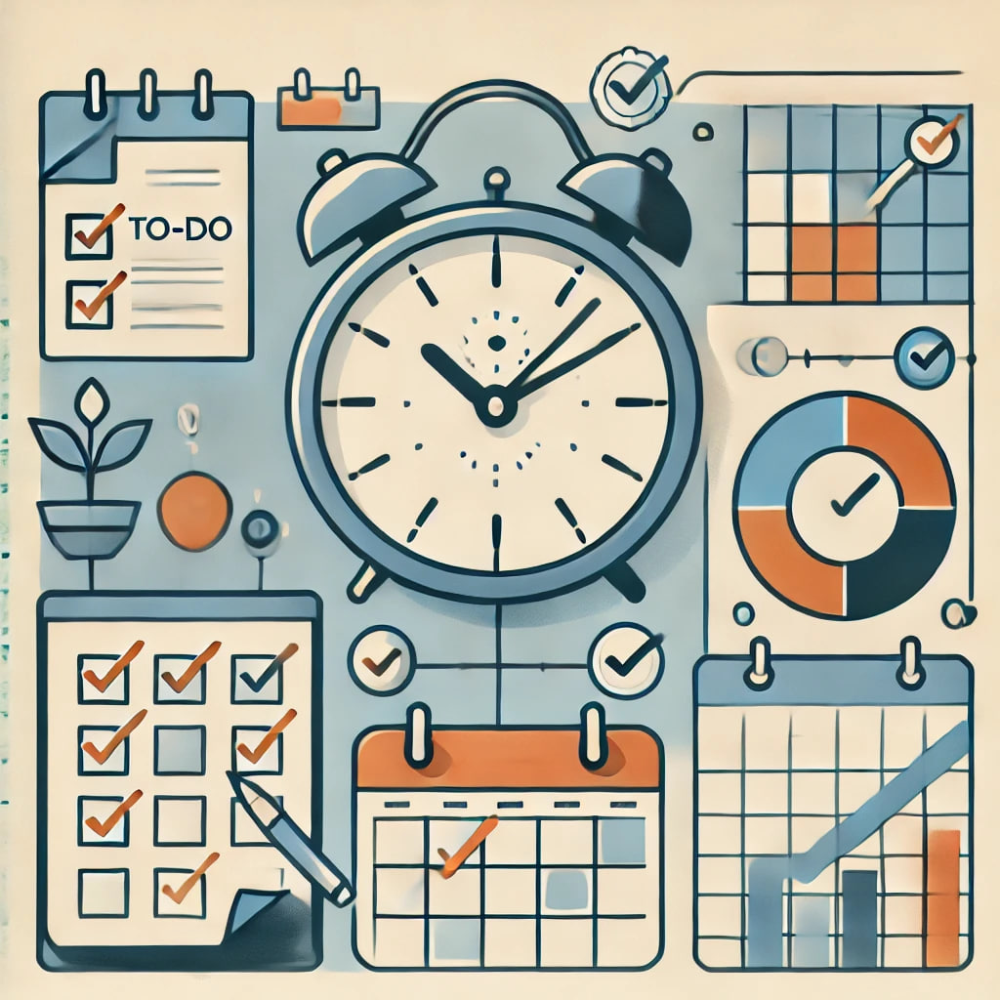

Тайм-менеджмент — это процесс планирования и организации времени таким образом, чтобы максимально эффективно использовать его для достижения поставленных целей.

Определение тайм-менеджмента
Тайм-менеджмент — это систематический подход к организации времени с целью повышения эффективности выполнения задач и достижения целей. Он помогает людям расставлять приоритеты, избегать прокрастинации и находить баланс между работой и личной жизнью.
Основные принципы тайм-менеджмента
- Целеполагание: Определение краткосрочных и долгосрочных целей, которые вы хотите достичь.
- Приоритизация: Оценка важности и срочности задач для их правильного распределения по времени.
- Планирование: Создание расписания или плана действий для выполнения задач.
- Делегирование: Передача части задач другим людям, если это возможно и целесообразно.
- Отслеживание времени: Анализ того, как вы тратите свое время, чтобы выявить области для улучшения.
Инструменты для тайм-менеджмента
- Календарные приложения: Google Calendar, Microsoft Outlook.
- Планировщики задач: Todoist, Trello, Asana.
- Таймеры: Pomodoro Timer, Focus Booster.
- Приложения для отслеживания времени: Toggl, Clockify.